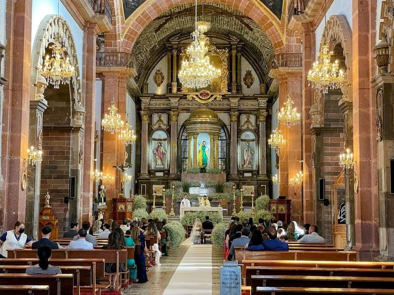
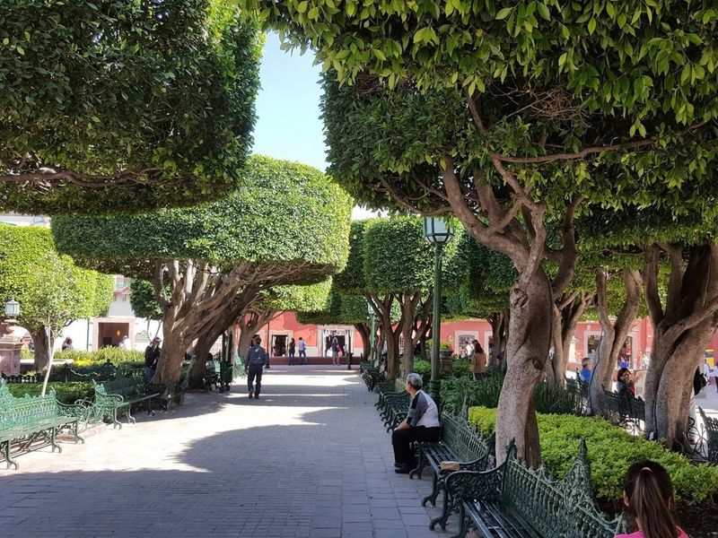
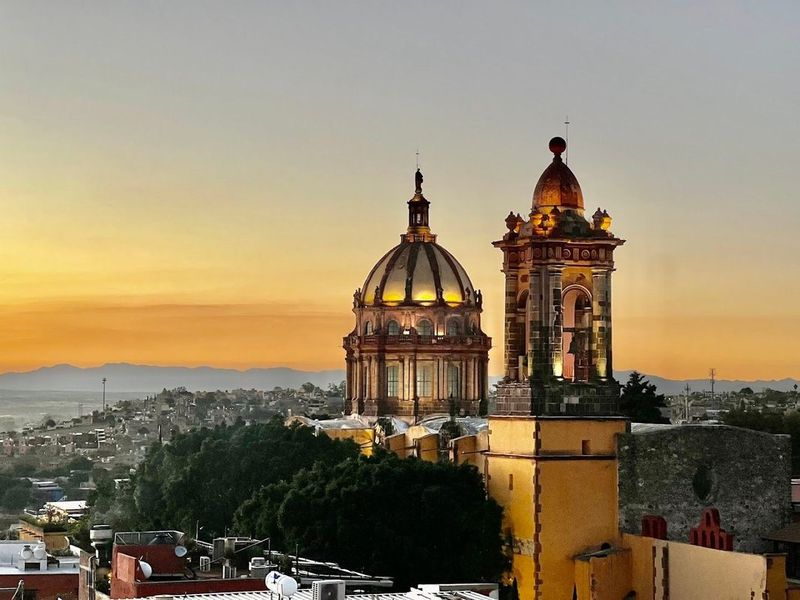
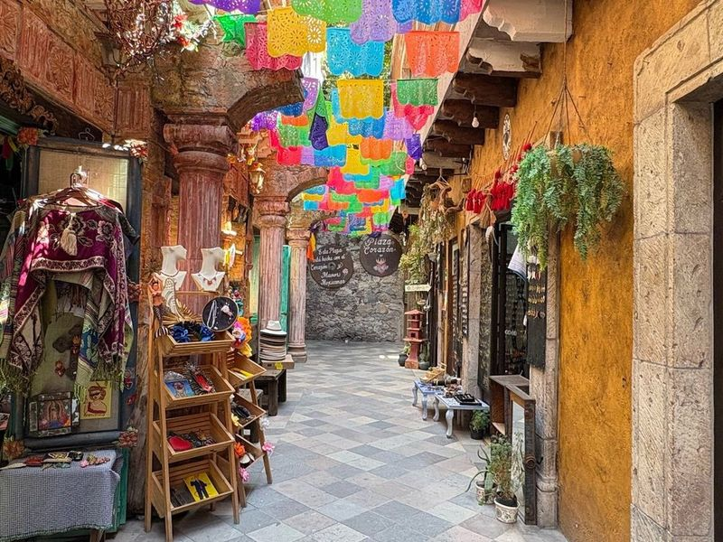
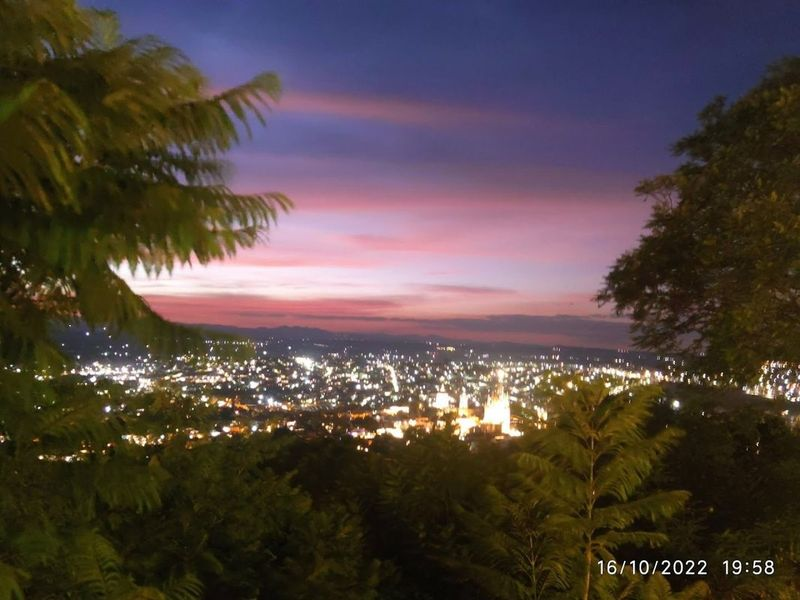
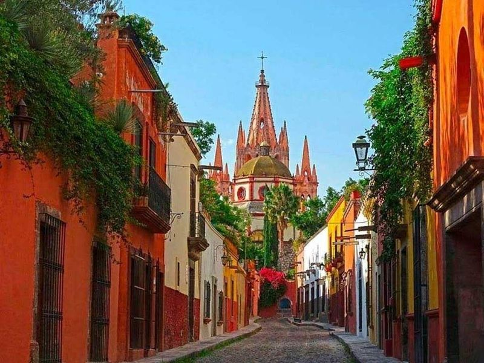
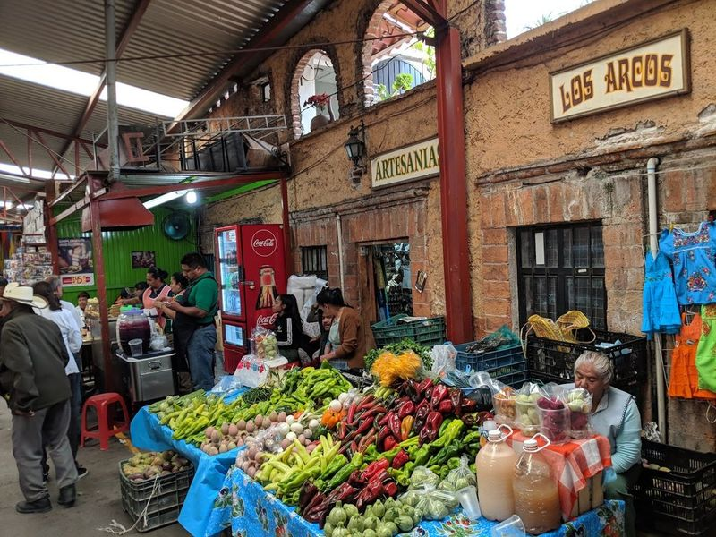
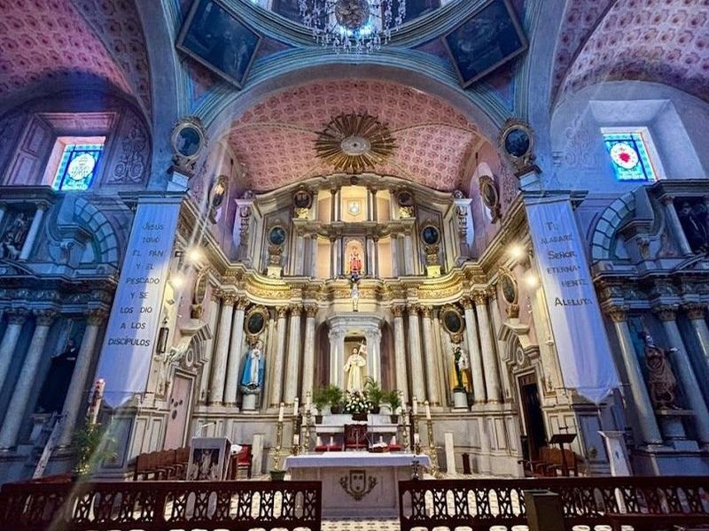
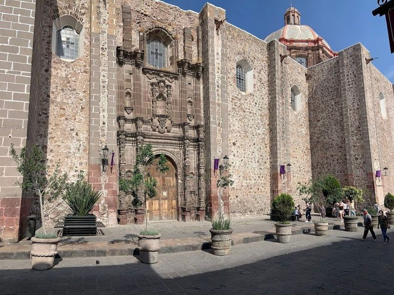
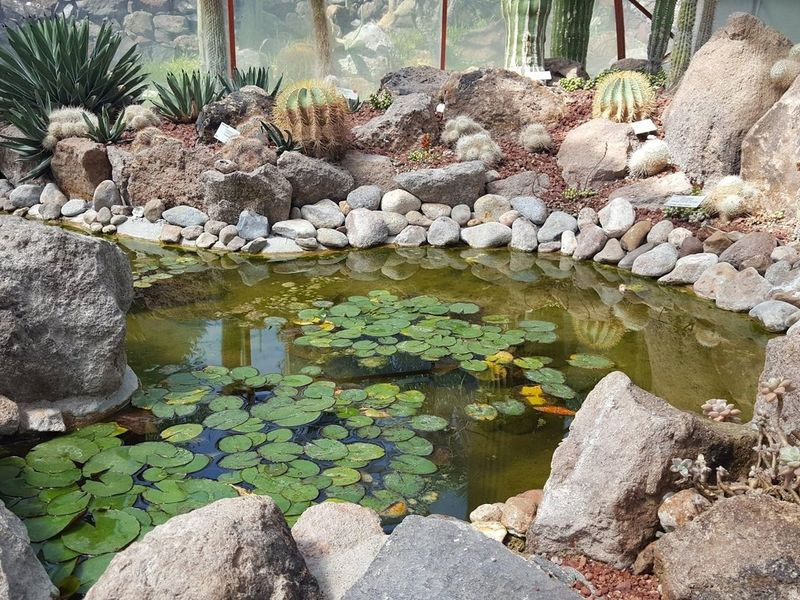

Explore San Miguel de Allende
A Brief History
San Miguel de Allende prospered on Bajío silver routes and later attracted artists after independence-era hero Ignacio Allende. Parroquia neo-Gothic façade, cobbled lanes, and colonial mansions record how a highland town became a cultural retreat. Fabrica La Aurora galleries and nearby sanctuary towns extend independence-era mansions across the Bajío highlands.
Attractions Map
Top Sights & Activities

Parroquia de San Miguel Arcángel
The Parroquia de San Miguel Arcángel is a 17th-century church with striking pink spires and an elaborate sanctuary. Its neo-Gothic design gives it the appearance of a small cathedral, making it a captivating sight in the heart of the city. The coral-colored walls and triangular spires add to its dreamy allure, attracting photographers, artists, and visitors seeking unique experiences.

Jardín Allende
Jardín Allende is a bustling garden square in San Miguel de Allende, lined with charming cafes and boutiques. It's home to a landmark pink Gothic cathedral and serves as the city's most central plaza. The atmosphere is filled with dueling mariachis, buskers playing modern tunes on traditional instruments, and live performances at the Angela Peralta Theater.

Church of the Immaculate Conception
The Church of the Immaculate Conception is a beautiful catholic church located on the south side of the Bellas Artes cultural centre in Madrid. It was founded in 1765 by the daughter of one of Madrid's most distinguished families, and features an impressive neoclassical dome installed in 1889. The church is for its beautiful architecture, and is also home to a small museum dedicated to religious art from around Spain.

Mercado de Artesanías
The Mercado de Artesanías in San Miguel de Allende is a artisan market offering a wide array of handcrafted goods. Visitors can explore stalls filled with hand-embroidered shawls, decorative pottery, silver jewelry, textiles, toys, hats, clothing, and rugs. The market is not just about shopping; it's also a culinary experience with sweetcorn snacks and homemade salsa or mole sauce to sample.

El Mirador
El Mirador, also known as El Mirador de San Miguel, is a popular mountainside destination in San Miguel de Allende that offers panoramic views of the city. Visitors can climb to the top and capture photographs of the charming colonial architecture as the sun sets over the horizon. The overlooks, including Mirador Cruz del Pueblo, provide an opportunity to pause and appreciate the beauty surrounding San Miguel de Allende.

Parque Benito Juárez
Parque Benito Juárez is a serene and picturesque park in San Miguel de Allende, Mexico. It features winding paths, flowers, and shaded benches perfect for relaxation. The park also includes a playground for children and hosts street vendors offering unique jewelry and art pieces. Visitors can catch a glimpse of local culture by witnessing wedding processions accompanied by mariachi bands on weekends.

Ignacio Ramírez Market
Ignacio Ramírez Market, located in the northeastern fringe of Centro, is a bustling and market offering a wide variety of goods. Visitors can find fresh produce from local farmers, meat from butchers, and freshly pressed tortillas. The market also features food stalls serving delicious dishes like milanese tortas and roasted goat and chicken soup. Additionally, there are vendors selling handmade tortillas, carnitas, cut fruit with cayenne, as well as household essentials.

Templo del Oratorio de San Felipe Neri
Nestled in the city of San Miguel de Allende, the Templo del Oratorio de San Felipe Neri stands as a testament to Baroque architecture infused with indigenous elements. Constructed in 1712, this church boasts an intricately designed facade made from pale-pink sandstone that captivates visitors at first glance. Inside, find lavish altars and exquisite artwork dedicated to its namesake, San Felipe Neri, a revered figure from the 16th century.

Templo de San Francisco
San Francisco Church in San Miguel de Allende offers a city experience with diverse musical performances and a rich culinary scene. The church hosts cultural events like the Dia de Muertos Requiem de Luigi Cherubini by Chorale San Miguel, known for their large-format choral concerts. The historic Tercera Orden within the San Francisco convent complex provides excellent acoustics for these performances.

Charco del Ingenio
El Charco del Ingenio is a remarkable botanical garden and nature preserve located on the edge of San Miguel. Spanning 67 hectares, it features an extensive collection of cacti from Mexico and around the world, along with other indigenous flora, some of which are endangered species. The landscape includes walking trails, a reservoir, streams, and a bird sanctuary. Visitors can join guided tours or take part in special events such as traditional temazcal steam baths and yoga classes.